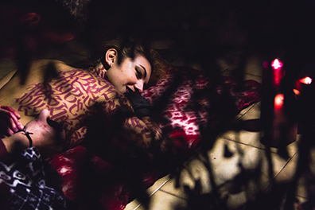
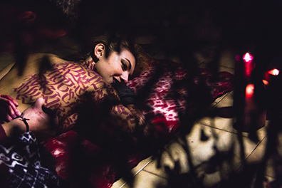

PROJECT 1
Calligraphy in de "Ghost City" Doel, Belgium
calligrapher: Paco Puylaert
model: Elena Cito
photographer: Guglielmo Bozzoli
editors: Vlad Ciutacu/Kristen Leight

 

THE STORY
A long time ago, a nuclear station was created close to the city of Doel. Close, to close for the people to live there. Since the city now only hostes something like 10 inhabitants, artists took over the city by giving birth to creative new projects. One cold winter day the crew united to head to the abandoned city and take over our own location to make our plan come true. A half painted wall and a half painted body in harmony and tending to bordeaux tonalities.